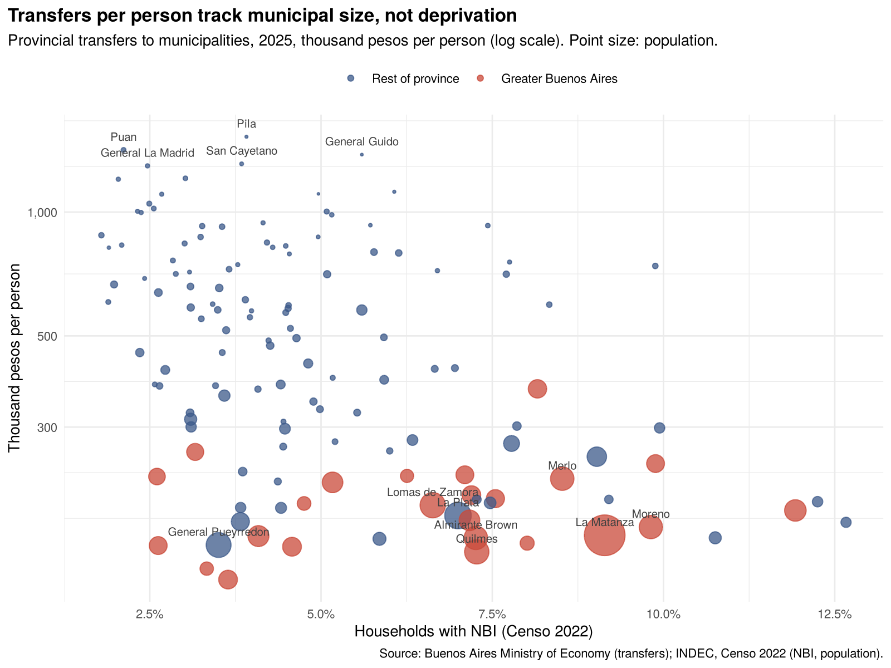

Policy note · Buenos Aires province · November 2026
1. Need is concentrated where transfers per person are lowest. Greater Buenos Aires has a higher share of households with Unmet Basic Needs (NBI) than the rest of the province (7.0% vs 5.4%) but received about 190,000 pesos per person in 2025, against 348,000 elsewhere.
2. The formula rewards size and hospitals, not deprivation. Municipal size and hospital provision explain about 80% of the variation in transfers per person; once they are accounted for, deprivation has no significant association with transfers.
3. Municipal averages hide most of the problem. 83% of the variation in deprivation across census tracts lies within municipalities. Sewer connection ranges from 87% of households in the least deprived fifth of Greater Buenos Aires tracts to 28% in the most deprived.
Buenos Aires municipalities receive a fixed share of provincial revenue through coparticipación (Ley 10.559) plus smaller earmarked funds: about 4.35 trillion pesos in 2025, 77% of it coparticipación. Each municipality's share is set by one coefficient: 58% reflects population, area and inverse tax capacity; 37% health indicators (beds, consultations, patient-days, discharges, inpatient facilities); 5% social services. No component measures deprivation. This note asks whether the allocation reaches the places with the greatest need.
Transfers are concentrated among the less deprived municipalities. Ranking the 135 municipalities from most to least deprived, households with NBI have a concentration coefficient of −0.18 (concentrated among the most deprived), while transfers have +0.11 (concentrated among the least deprived). The pattern holds, more weakly, with an income-closer measure of deprivation (INDEC's IPMH).

Size and hospitals drive the allocation. A municipality 1% larger receives about 0.3–0.4% less per person; size alone explains three quarters of the variation. Municipalities with more public hospitals per resident receive more, as the health component intends. Neither factor tracks deprivation: small rural municipalities with their own hospitals receive the most per person, large deprived peri-urban ones the least.
Services lag where deprivation is concentrated. Primary care centres are well located, but public general hospitals are not: in Greater Buenos Aires, 10.8% of people in the most deprived fifth of census tracts live more than 5 km from one, against 1.5% in the least deprived. The sewer gap is steeper still, and transfers bear no relation to it.
| Indicator | Greater Buenos Aires | Rest of province |
|---|---|---|
| Households with NBI (2022) | 7.0% | 5.4% |
| Provincial transfers per person (2025) | ≈ 190,000 pesos | ≈ 348,000 pesos |
| Sewer connection, least vs most deprived fifth of tracts | 87% vs 28% | 82% vs 23% |
| Distance to nearest public general hospital, least vs most deprived fifth | 1.8 vs 2.9 km | 3.5 vs 3.8 km |
The gap is large. As an illustration only, splitting the same pool 50% by population and 50% by households with NBI would raise transfers by more than 20% in 24 municipalities, mostly in Greater Buenos Aires, and cut them by more than 20% in 92. The exercise ignores the fixed costs of small municipalities; it shows distance from need, not a feasible reform.
Trade-offs: small municipalities have real fixed costs; changing Ley 10.559 requires legislative approval and touches every municipal budget; and need-based transfers can weaken incentives to reduce measured deprivation, which favours census indicators municipalities cannot manipulate.
The analysis is descriptive: regressions describe associations, not causal effects. NBI measures structural deprivation (housing, sanitation, schooling, subsistence capacity), not income; results are checked with IPMH. Deprivation and population are from the 2022 census; transfers and facilities from 2025. Distances are straight-line. Full methods, code and data: github.com/diegolestani/pba-transfers-need; interactive map: diegolestani.github.io/pba-transfers-need. Formula weights as described in CREEBBA, Indicadores de Actividad Económica 161, and Ley 10.559.